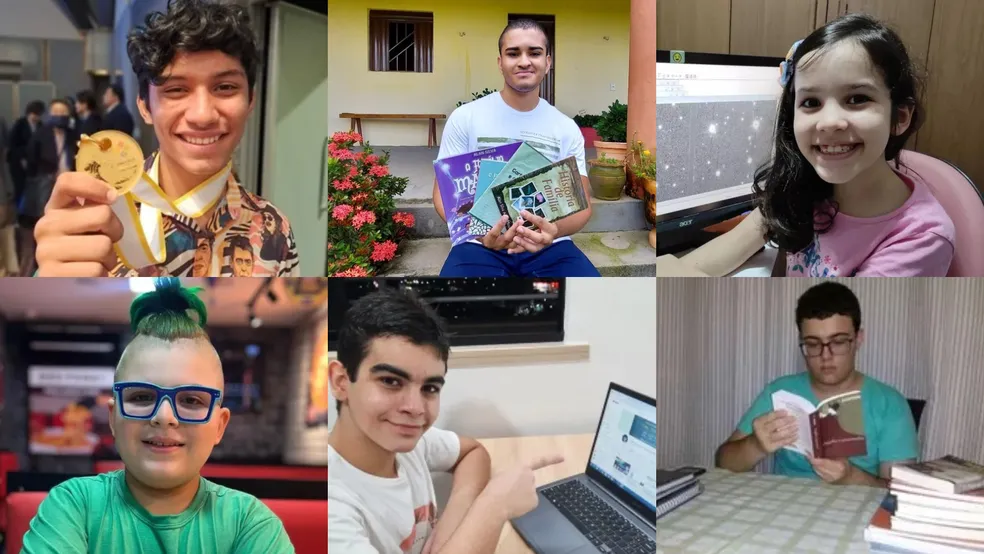

Medalhistas de matemática do Ceará se destacam no Brasil e no exterior
O estado do Ceará é lar de alguns dos jovens mais promissores da educação brasileira. Estudantes medalhistas em olimpíadas de matemática vêm conquistando bolsas de estudo internacionais e feitos impressionantes, como passar no vestibular aos 10 anos.
Autor: Jessica Prestelo
Jovens talentosos
Entre esses talentos está um jovem que, além de ganhar medalha de ouro na Olimpíada Brasileira de Matemática, foi aceito em uma renomada instituição dos Estados Unidos. Outro exemplo é uma estudante que, aos 15 anos, já participou de competições internacionais, levando o nome do Brasil ao pódio.
Esses casos não apenas celebram o talento dos jovens cearenses, mas também reforçam a importância de programas de incentivo, como as olimpíadas científicas. “Eles mostram que o investimento na base educacional pode gerar resultados excepcionais, abrindo portas inimagináveis”, afirma um professor local. Os feitos desses jovens continuam a inspirar estudantes de todo o Brasil a sonhar alto e alcançar metas desafiadoras.